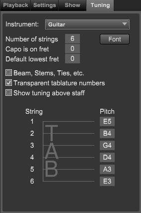

Track Inspector Panel - Track Tuning Tab
Track Inspector Panel - Track Tuning Tab
If the Track Inspector panel is not showing click on the Inspector button at top right of Control Bar or type "Shift-I" to open the panel.
If needed, click on the Track section at the top of the panel and then the Tuning tab.
Note: The tuning tab does not appear on piano, organ, or percussion tracks.
The Tuning tab area contains guitar settings for the current track.

- Instrument - Choose the guitar type from the pop-up menu.
- Number of strings - Sets the number of strings for this instrument.
- Font - Choose the font to use for tablature fret numbers.
- Capo - Sets the starting capo position.
- Default lowest fret. - Sets a limit so that fret positions are always above this number.
- Beams, stem, ties, etc. - Set this if you want these items to be displayed on tablature staves.
- Transparent tablature numbers - Set this true if you do not want the numbers to have a white background.
- Show tuning above staff - Set this if you want to display this tuning above the staff
- Pitch Numericals - Drag each pitch numerical to set string's pitch.